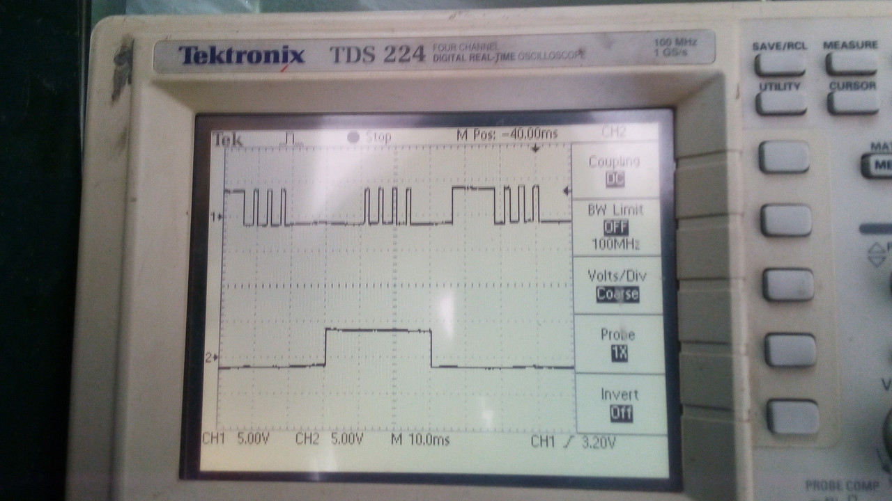
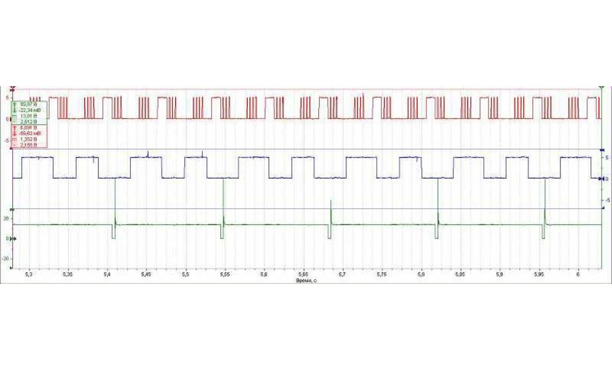
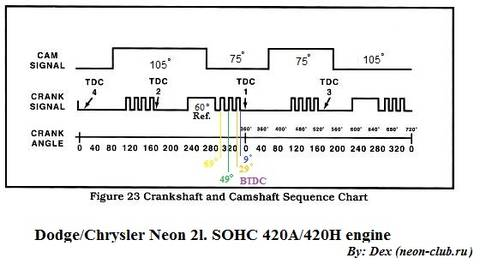

'95 Neon FCC: hardware and firmware overview
This page and its companions (calibration, diagnostics and communication, fault codes, engine control and tuning notes) summarise the reverse-engineered, rebuildable firmware source published at github.com/DDex89/neon-fcc-firmware. The source assembles back into the original ROM images byte for byte, so every statement below can be checked against real code. Statements marked (inferred) come from reading the code and are not yet confirmed on real hardware; the board is potted in soft compound, so probing the CPU pins directly has not been done.
The 1995 Neon controller (“FCC”, Four Cylinder Controller) has a single 60-pin connector. From 1996 the Neon uses the SBEC III with two 40-pin connectors, which is different hardware and firmware.
The CPU is a Motorola 68HC11 running in expanded mode. The register layout used by the code
(OPTION at $1039, INIT at $103D, BPROT at $1035, EEPROM window at $B600) matches the 68HC11 A/E
family. The program lives in an external (E)EPROM that fills $1200-$FFFF: 60,928 bytes, exactly the
size of the .bin dumps.
Memory map
| Range | Contents |
|---|---|
$0000-$00FF | Direct-page RAM: the most used variables (8-bit addressing) |
$0100-$03FF | RAM: more variables, fault code data, buffers |
$0400-$0437 | External I/O device registers (the original disassembly calls it “PIA”). Initialised from the table after ResetInterrupt. It also drives the injectors: per-cylinder pulse widths at $0424/$0428/$042C/$0430, command register $0410, status in $0400/$0401. Register $0409 bit 4 is toggled every main-loop pass (heartbeat). (inferred) |
$0438-$04FF | RAM and the stack (the stack pointer starts at $04FF) (inferred) |
$1000-$103F | 68HC11 internal registers (src/inc/hc11_regs.inc) |
$1200-$B4CC | Program code, part 1 |
$B4CD-$B5FF | Unused ($FF) |
$B600-$B7FF | Window of the HC11 internal EEPROM. The CPU sees the EEPROM here, not the EPROM image, and the ROM checksum skips this range. |
$B800-$E228 | Calibration: header (part number, configuration flags) and about 460 tables and constants |
$E229-$FFD5 | Program code, part 2; the copyright string is at $FFA4. $FDDA-$FFA2 (457 bytes, including the checksum spare byte $FF50) and $FFC0-$FFD5 (22 bytes) are unused $FF |
$FFD6-$FFFF | Interrupt vectors |
Calibration header
| Address | Meaning |
|---|---|
$B800-$B801 | Calibration ID bytes |
$B802-$B805 | Part number in BCD, for example 05 00 70 33 = 05007033. $B805 is also the ROM checksum target. |
$B806 | Revision |
$B807-$B80B | RFI number and revision |
$B811 | Configuration flags: bit 7 A/C, bit 6 EGR, bit 5 automatic transmission, bit 2 alarm disable, bit 1 early TPS transient fuel |
$B812 | Configuration flags 2 (bit 4 transient fuel, bit 6 O2) |
$B813-$B816 | CCD bus configuration |
$B817-$B819 | Masks of the faults that light the check-engine lamp |
See also the input / output map, the connector pinout and diagnostics.
Timers and interrupts
The timer runs at E-clock / 4. With the usual 8 MHz crystal (2 MHz E-clock) one TCNT tick is 2 us and the counter wraps every 131 ms.
| Vector | Handler | Use |
|---|---|---|
| RESET | ResetInterrupt | Start-up |
| PAI (PA7 edge) | Isr_PAI_CamPhase | Cam sensor edges (both polarities): cylinder identification from the crank signal level (inferred) |
| PAOV | Isr_PAOV | Pulse accumulator overflow count |
| TIC1 (PA2) | Isr_TIC1_CrankEvent | Crank sensor edges: the main engine event; dispatches the per-edge handlers that schedule fuel and spark (inferred; Lloyd called it the cam sensor) |
| TIC2 | Interrupt_SpeedometerSignal | Vehicle speed sensor |
| TIC3 (PA0) | Isr_TIC3 | Other edge of the crank signal (slot width); starts the long period measurement together with TOF (inferred) |
| TOF | Isr_TOF | Timer overflow count for long periods |
| TOC1 | Isr_TOC1_Periodic | Periodic interrupt every $03B9 ticks (about 1.9 ms) |
| TOC3 (PA5) | Interrupt_DwellTimerA | Ignition coil A driver: dwell start and spark |
| TOC4 (PA4) | Isr_TOC4_KnockSample | End of the knock window: samples the knock sensor through the A/D |
| TOC5 (PA3) | Interrupt_DwellTimerB | Ignition coil B driver: dwell start and spark |
| TOC2, IRQ, XIRQ, SWI, illegal opcode, COP, clock monitor, SCI, SPI, RTI | Trap_* | Not used: these handlers record the cause and restart the controller |
Reset sets TCTL2 = $1A (IC1 on rising edges, IC2 and IC3 on falling edges) and TCTL1 = $2A (OC3, OC4 and OC5 clear their pins on compare; OC2 is disconnected from its pin).
The register names in the original disassembly (inherited from the turbo SMEC) call OC3 and OC4 injector drivers and OC2 “wastegate”. On the FCC the coils use OC3/OC5 directly, while the four injectors are timed by the external I/O device (see engine_control.md).
Start-up and recovery
ResetInterrupt programs the HC11 system registers within the first 64 cycles, as the HC11
requires for the protected registers. It then checks whether RAM survived:
CountRamValuesFrom05to38sums the RAM that holds adaptive memory, fault codes and learned values
($0005-$0036 and $0100-$014D);
- if the sum matches the stored copy and the signature
$AAA5is present, the RAM is kept (warm start); - otherwise RAM is cleared and default values are loaded (cold start).
Every unused interrupt vector points to a small Trap_* stub. The stub puts a cause bit into
BYTE00, then runs the same initialisation as reset without clearing RAM, so after a crash,
watchdog timeout or illegal opcode the engine keeps its learned values and fault codes.
| Cause bit | Trap |
|---|---|
| $01 | SCI / SPI / real-time interrupt |
| $02 | XIRQ |
| $04 | COP watchdog |
| $08 | Clock monitor |
| $10 | Illegal opcode |
| $20 | SWI |
| $40 | Output compare 2 |
| $80 | IRQ pin |
Main loop and scheduler
MainProgramLoop runs once every $1500 ticks = 10.75 ms. That is the “x 11 ms” unit that
appears in many calibration constants.
MainSubLoopruns on every pass: COP watchdog kick, heartbeat on $0409, period measurements,
A/D of battery voltage, TPS and cruise switches, throttle and baro logic, cranking fuel, and further always-run tasks.
- Then at most one of the eight sub-loops
SubLoopA..SubLoopHruns. Their request bits are in
RAM $0150; the lowest pending bit is served and cleared. Slow tasks (temperature sensors,
diagnostics …) are spread this way. IncrementLoopCounters_MM sets request bit n each time bit n
of Counter_MainLoop changes from 0 to 1, so sub-loop A runs every 2 passes (21.5 ms), B every 4,
and so on up to H every 256 passes (2.75 s). [code]
- The loop measures how long the pass took (RAM $0455, worst case in $0454) and waits until TCNT
reaches the next 10.75 ms slot.
Time-critical work (fuel and spark scheduling relative to crankshaft position, knock sampling, coil dwell) runs in the interrupt handlers, not in the main loop.
Table formats
Almost all calibration data uses two formats.
2D curves, "point-slope" (''Lookup4ByteTable'', $FA9D)
count n x0, y0, slope0_hi, slope0_lo x1, y1, slope1_hi, slope1_lo ... x(n-1), y(n-1) ; last point has no slope
For an input x below x0 the result is y0. Otherwise the routine finds the segment x_i ⇐ x < x_(i+1)
and returns y_i + (x - x_i) * slope_i / 256. The slope is stored rather than computed, so editing
a y value without updating the slope gives a wrong curve. MP Tune recalculates slopes automatically.
3D maps (''Lookup3DTableRoutine_2'', $B437)
rows, cols, sign ; sign: $00 unsigned, $80/$FF signed rows x cols bytes, row by row
The two inputs are 0-255 coordinates produced by transfer curves: for example RPMSCL turns engine
RPM into the column coordinate and MAPHI turns MAP into the row coordinate. The coordinate is
spread evenly over the (cols-1) and (rows-1) intervals and the four surrounding cells are
interpolated bilinearly. So the RPM and MAP breakpoints of a map are defined by its transfer curve,
not by the map itself. Changing RPMSCL moves every map that uses it.
ROM checksum
CaculateChecksum ($56E7) adds every byte of $1200-$B5FF and $B800-$FFFF (8-bit sum, skipping the
EEPROM window). The result must equal the byte at $B805, the last byte of the part number. On a
mismatch the routine reports fault code 53 (internal controller failure). In both images in this
repository that fault descriptor is disabled (flag bit 7 clear, see fault_codes.md), so
nothing is stored and the engine runs normally. In the factory images (B559, B4F3 and B4C2)
the same descriptor (at $D4F9 in B559) is enabled, so a wrong sum does store code 53.
Anyone who changes the calibration should fix the sum with a spare byte. Factory images keep $FF50 at $FF for this. Some images edited with MP Tune that were examined for this project do not pass this test, so check the sum after using any editor.
Input / output map
Reconstructed from the code: register accesses, A/D conversion sequences, the actuator tests and the routines that drive each output bit. [code] follows directly from the code, [inferred] is likely but not yet confirmed on the board.
68HC11 timer pins (port A)
| HC11 pin | Function | Use | Pin | |
|---|---|---|---|---|
| PA0 | IC3 | Crank sensor, falling edges (slot width) | 25 | [inferred] |
| PA1 | IC2 | Vehicle speed sensor | 5 | [code] |
| PA2 | IC1 | Crank sensor, rising edges: main engine event | 25 | [code] |
| PA3 | OC5 | Ignition coil driver (ATM test $01) | 21 or 1 | [code] |
| PA4 | OC4 | Knock window timer; also forced high at the start of an ISO 9141 session | — | [code] |
| PA5 | OC3 | Ignition coil driver (ATM test $02) | 1 or 21 | [code] |
| PA6 | OC2 / output | Intake air temperature sensor pull-up range: set selects the cold range (table TMPTL1), clear the hot range (TMPTL2); switched by CheckAndFilterChargeTempSensor_SM | — | [code] |
| PA7 | PAI | Cam sensor, both edges | 26 | [code] |
Which OC pin drives coil #1 (pin 21) and which drives coil #2 (pin 1) is not known yet.
A/D converter (port E)
Two scan modes are used: ADCTL = $10 converts AN0-AN3, ADCTL = $14 converts AN4-AN7. AN4 and AN5
are each fed by a 4-to-1 analog multiplexer; bits 0-1 of I/O register $0400 select the input of
both at once. Results are stored as 16-bit pairs (ADR1:ADR2 and ADR3:ADR4).
| Channel | Signal | Stored in | Pin | |
|---|---|---|---|---|
| AN0 | MAP sensor (crank-synchronous scan) | MapVolts | 29 | [inferred] |
| AN1 | Battery voltage | BatteryVolts | 11 (fused B+) | [code] signal, [inferred] pin |
| AN2 | Upstream O2 sensor | O2SensorVolts | 8 | [code] |
| AN3 | Knock signal, single conversion in Isr_TOC4_KnockSample (ADCTL = $03), probably after an interface circuit | 27 | [code] | |
AN4, select 00 | Coolant temperature; the pull-up range is switched with $0400 bit 7 | LastCoolantTempVolts ($016C) | 28 | [code] |
AN4, select 01 | Read but never used | AnalogMux01_AN4 ($016E) | ? | [code] |
AN4, select 10 | ASD relay output voltage, checked against battery voltage (fault code 42) and used for the injector supply | AsdOutputVolts ($0170) | 42 | [inferred] |
AN4, select 11 | Read but never used | AnalogMux11_AN4 ($0172) | ? | [code] |
AN5, select 00 | Intake air temperature (ChargeTemp in the original names); the pull-up range is switched with PA6 | LastChargeTempVolts ($016D) | 6 | [code] signal, [inferred] pin |
AN5, select 01 | Downstream O2 sensor | DownstreamO2Volts ($016F) | 7 | [code] |
AN5, select 10 | Temperature input checked by fault code 44 (AmbientAirTempVolts in the original names) | ($0171) | 49? | [inferred] |
AN5, select 11 | Battery temperature (fault code 44) | BatteryTempVolts ($0173) | 49 | [inferred] |
| AN6 | Throttle position (TPS) | LastTpsVolts ($0174) | 10 | [code] |
| AN7 | Speed control switches (one resistor ladder) | CruiseControlSwitchStateAnalog ($0175) | 31 | [code] |
The fuel level sensor (pin 13) is not used anywhere in the code. If it is wired to the controller, the likely places are the two AN4 inputs that are read but never used.
External I/O device at $0400
| Register | Bits | Use | |
|---|---|---|---|
$0400 (write) | 0-1 | Select for the AN4 / AN5 analog multiplexers | [code] |
| 2 | Output driven by ATM test $0D, latched by a pulse on $0402 bit 2 | [code], output unknown | |
| 7 | Coolant sensor pull-up range: set selects the cold range (TMPTL1), clear the hot range (TMPTL2); switched after four readings beyond $40 / $DC | [code] | |
$0400 (read) | 3 | Companion chip ready: every link byte waits for this bit to clear | [code] |
| 4 | Injector driver status, checked before each injection command | [code] | |
| 6 | Read by the shutdown routine | [code] | |
$0401 (read) | Status read by the tachometer test and the injector driver check | [code] | |
$0402 | 2 | Strobe for $0400 bit 2 | [code] |
| 3 | Clock pulse for each companion chip byte | [code] | |
$0403 | 0 | Set at reset and after each link frame | [code] |
| 1 | Tachometer output, pin 48 | [code] | |
| 2 | Chip select of the SPI output driver | [code] | |
| 3 | Knock window gate: set in crank phase 3, cleared when the knock sample is taken | [code] | |
$0409 | 3 | Companion chip reset: pulsed low after ten failed link frames | [inferred] |
| 4 | Heartbeat, toggled every main-loop pass (external watchdog) | [code] | |
| 1, 2 (read) | Inputs, see above | [code] | |
$040E (read) | 0, 3 | Status bits read by the ISO 9141 routines | [code] |
$0410 | Injector command: $04 hands the latest pulse widths to the injector timers | [code] | |
$0424, $0428, $042C, $0430 | 16 bit | Injector pulse width, cylinders 1, 2, 3, 4 (microseconds); pins 4, 23, 3, 24 | [code] |
$0404-$0408, $040A-$040D, $040F | Set once by InitPeripheralRegisters ($0407 = $1B, $040D = $33, …); meaning not known without the device's documentation |
SPI output driver
SendOutputDriverByte ($5A29) pulls $0403 bit 2 low, shifts this byte out over SPI and stores
the byte shifted back in (OutputDriverStatus), which is the driver's fault status. This behaviour
matches an octal serial low-side switch with diagnostics. [code]
| Bit | Output | Evidence | Pin | |
|---|---|---|---|---|
| 0 | A/C compressor clutch relay | ATM test $09, air conditioning routines | 59 | [code] |
| 1 | EGR solenoid | ExhGasRecirc_MM, ATM test $10 | 39 | [code] |
| 2 | ASD relay | Switched together with bit 4 by ControlAsdRelay_MM; ATM test $0A | 18 | [inferred] |
| 3 | Radiator fan relay | ATM test $08 | 19 | [code] |
| 4 | Fuel pump relay | Switched together with bit 2 by ControlAsdRelay_MM | 38 | [inferred] |
| 5 | Canister purge solenoid; reported as secondary air status by OBD-II PID $12 on cars with that option | Duty-cycle routine at $B290, ATM test $15, DRB override target 3 | 16 | [inferred] |
| 6, 7 | Speed control vacuum and vent solenoids (order not confirmed) | Speed control routine, ATM tests $0C, $1A, $1B | 40, 60 | [code] |
Companion chip outputs
OutputBits2 (StartupSwitchMirror2 in the original disassembly) is sent to the companion chip
with register header $50 by LinkRegisterUpdate (see ccd_and_link.md). Bit 6 is reported as “lamp on” on CCD when it is clear, so
the outputs may be active low.
| Bit | Output | Pin | |
|---|---|---|---|
| 0 | Power hold after key-off for the O2 heater test (confirmed by LinkInputWordHi bit 0) | — | [inferred] |
| 3 | Load switch on the O2 sensor lines for the heater test (confirmed by LinkInputWordHi bit 3) | — | [inferred] |
| 4 | Charge indicator lamp (driven by charging-system faults through $0070 bit 7) | 37 | [inferred] |
| 5 | TCC / PTU solenoid (PTU_SetPTUBits, ATM tests $0F, $17) | 17 | [code] |
| 6 | Check-engine lamp (toggled to blink flash codes) | 36 | [inferred] |
| 7 | Output driven by $9C6A (ControlPurgeSolenoid_MM in the original disassembly) and DRB override target 1 | ? |
The companion chip itself also carries the CCD bus and the idle air stepper; see companion chip link and CCD bus.
PCM connector (60 pins)
Pinout of the 1995 Neon FCC engine controller, from the wiring diagram supplied by the project owner. Pin 48 (tachometer) was added later and is missing from some diagrams.
Pinout of the 1995 Neon FCC engine controller, from the wiring diagram, supplied by the project owner. Pin 48 (tachometer) was added later and is missing from some diagrams. For the firmware side of each signal see io_map.md.
| Pin | Circuit | Wire | Function |
|---|---|---|---|
| 1 | K19 | BK/GY | Ignition coil #2 driver |
| 2 | Z12 | BK/TN | Ground |
| 3 | K13 | YL/WT | Injector #3 driver |
| 4 | K11 | WT/DB | Injector #1 driver |
| 5 | G7 | WT/OR | Vehicle speed sensor signal |
| 6 | K21 | BK/RD | Intake air temperature sensor signal |
| 7 | K141 | TN/WT | Downstream O2 sensor signal |
| 8 | K41 | BK/DG | Upstream O2 sensor signal |
| 9 | D20 | LG | SCI receive |
| 10 | K22 | OR/DB | Throttle position sensor signal |
| 11 | A14 | RD/WT | Fused B+ |
| 12 | Empty | ||
| 13 | G4 | DB | Fuel level sensor signal |
| 14 | K60 | YL/BK | IAC #2 driver |
| 15 | K39 | GY/RD | IAC #3 driver |
| 16 | K52 | PK/BK | EVAP purge solenoid control |
| 17 | K54 | OR/BK | TCC solenoid control |
| 18 | K51 | DB/YL | ASD relay control |
| 19 | C27 | DB/PK | Radiator fan relay control |
| 20 | Empty | ||
| 21 | K17 | DB/TN | Ignition coil #1 driver |
| 22 | Z12 | BK/TN | Ground |
| 23 | K12 | TN | Injector #2 driver |
| 24 | K14 | LB/BR | Injector #4 driver |
| 25 | K24 | GY/BK | Crankshaft position sensor signal |
| 26 | K44 | TN/YL | Camshaft position sensor signal |
| 27 | K42 | DB/LG | Knock sensor signal |
| 28 | K2 | TN/DB | Coolant temperature sensor signal |
| 29 | K1 | DG/RD | MAP sensor signal |
| 30 | D21 | PK | SCI transmit |
| 31 | V37 | RD/LG | Speed control switch signal |
| 32 | K29 | WT/PK | Brake switch sense |
| 33 | C20 | BR/OR | A/C switch sense |
| 34 | K59 | VT | IAC #4 driver |
| 35 | K40 | BR/WT | IAC #1 driver |
| 36 | G3 | BK/PK | Malfunction indicator lamp driver |
| 37 | G12 | TN/BK | Charge indicator lamp driver |
| 38 | K31 | BR | Fuel pump relay control |
| 39 | K35 | GY/YL | EGR solenoid control |
| 40 | K36 | TN/RD | Speed control vacuum solenoid control |
| 41 | K20 | DG | Generator field driver |
| 42 | A142 | DG/OR | ASD relay output |
| 43 | K6 | VT/WT | 5 V supply |
| 44 | K7 | OR | 8 V supply |
| 45 | Empty | ||
| 46 | Empty | ||
| 47 | V32 | YL/RD | Speed control power supply |
| 48 | G21 | GY/LB | Tachometer signal |
| 49 | G31 | VT/LG | Battery temperature sensor signal |
| 50 | T41 | BR/YL | Park/neutral position switch sense |
| 51 | K4 | BK/LB | Sensor ground |
| 52 | Z11 | BK/WT | Ground |
| 53 | Empty | ||
| 54 | F18 | LG/BK | Fused ignition switch output |
| 55 | L1 | VT/BK | Reverse lamp sense |
| 56 | K10 | WT | Power steering pressure switch sense |
| 57 | Empty | ||
| 58 | Empty | ||
| 59 | C28 | DB/OR | A/C compressor clutch relay control |
| 60 | V35 | LG/RD | Speed control vent solenoid control |
Engine position and event scheduling
Roles inferred from the code; to be confirmed with a scope on a running engine.
- Crank sensor → TIC1 (PA2) (
Isr_TIC1_CrankEvent). Every edge is time-stamped. Together with
input capture 3 on the other edge (PA0) the firmware measures the slot width and the period, which
identifies the reference slots. Once synchronised, each edge increments CrankEventCounter
($0449) and calls one of four handlers (CrankPickupIntrAddressTable), chosen by the event phase:
CrankInterrupt_FallingEdge, …_HandleCamSensorRisingEdgeA/B and CrankInterrupt_CalculateFuel.
- Cam sensor → PAI (PA7) (
Isr_PAI_CamPhase). Both edges are caught by flipping the PAI edge
select. The level of the crank signal at that moment tells which half of the 720 degree cycle it is,
and sets the phase in CrankEventCounter and the sync flags (SyncFlags74, SyncFlags75).
- Ignition: two coils in wasted-spark mode, driven straight from OC3 (PA5) and OC5 (PA3).
ScheduleIgnitionCoils writes the compare times and the TCTL1 pin actions (dwell start, then fire);
Interrupt_DwellTimerA/B chain the next action.
- Injectors: sequential, but not timed by the HC11.
IncludeInjectorLatencywrites the final
pulse width (microseconds, latency included) into the external I/O device: $0424 cylinder 1,
$0428 cylinder 2, $042C cylinder 3, $0430 cylinder 4. InjCylinderMask selects the
cylinders (bit 0 = cyl 4, bit 1 = cyl 2, bit 2 = cyl 1, bit 3 = cyl 3, firing order 1-3-4-2), and
writing $04 to $0410 hands the pulse over to the device.
- The four crank event handlers run in a fixed sequence (event phase = low two bits of
SyncFlags75):
| Phase | Handler | Main jobs |
|---|---|---|
| 0 | CrankInterrupt_FallingEdge | period and slot-width bookkeeping, rev limiter, MAP plausibility checks, idle spark scatter, injector hand-off |
| 1 | CrankInterrupt_HandleCamSensorRisingEdgeA | injector scheduling for the next cylinders |
| 2 | CrankInterrupt_HandleCamSensorRisingEdgeB | injector scheduling, adaptive retard index, running-time counters |
| 3 | CrankInterrupt_CalculateFuel | RPM, MAP sampling, knock window, coil forcing, running fuel, per-cylinder knock retard |
(The “CamSensorRisingEdge” names are historical; all four run from the crank interrupt.)
- MAP is sampled at a fixed crank angle: phase 3 starts an A/D scan of channels 0-3 (
ADCTL = $10). - Knock window: phase 3 sets
TOC4 = edge time + 2 x tooth time x factor / 256, a fixed fraction of
the tooth period after the edge, and Isr_TOC4_KnockSample reads the knock sensor when it expires.
- Sensor signals (scope captures at idle, about 880 rpm; one from the project owner's car, one
published reference capture):



- Crank: one group of four pulses every 180 degrees of crankshaft (one group per cylinder
event, about 34 ms apart at idle). Inside a group the rising edges are about 3.8 ms apart, which is roughly 20 degrees. In every second group the first pulse is wide (it starts about 60 degrees earlier), which marks the two halves of a revolution.
- Cam: windows of two different lengths, roughly 0.83 and 1.17 times the group spacing,
arranged long - short - short - long over 720 degrees, so four cam edges per cycle.
- Match with the code: IC1 sees the four rising edges of each group, which are the four event
phases, so the four handlers are the four slots of one cylinder event. The long low time before
the first rising edge of a group is what the slot-width check in Isr_TIC1_CrankEvent detects.
Doing the MAP sample and the knock window in phase 3 (the last slot, closest to TDC) fits this
picture. Isr_PAI_CamPhase reads the crank level at each cam edge: some cam edges fall inside a
wide crank pulse (level high), others in a gap (level low), which identifies the cylinder.
- Angles (Chrysler service manual, “Crankshaft and Camshaft Sequence Chart”, 2.0 SOHC 420A/420H):
the four slots of each group are at 69, 49, 29 and 9 degrees BTDC; the wide 60 degree reference window comes before the groups of cylinders 1 and 4 (every 360 degrees); the cam windows are 105 / 75 / 75 / 105 cam degrees (210 / 150 / 150 / 210 crank degrees). The firing order is 1-3-4-2. All of this agrees with the scope measurements above.
- With phase 0 = first slot of the group (the edge after the long gap), the phases are
0 = 69, 1 = 49, 2 = 29, 3 = 9 degrees BTDC. Phase 3, where MAP is sampled and the knock window is armed, is the 9 degree BTDC slot.
- Verification needed: the signal polarity at the HC11 pins. The input buffer may invert the
sensor signal, which would make IC1 see the other edge of each slot and shift the phase angles by the slot width. Checking it means probing the CPU pins, which requires opening the controller (the board is potted in soft compound), so it has not been done yet.